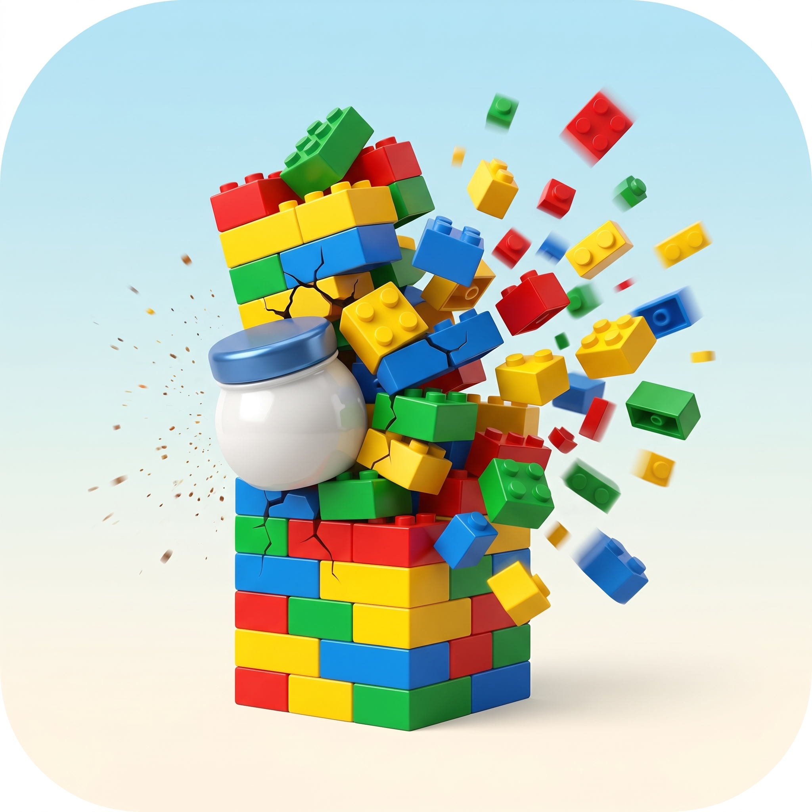
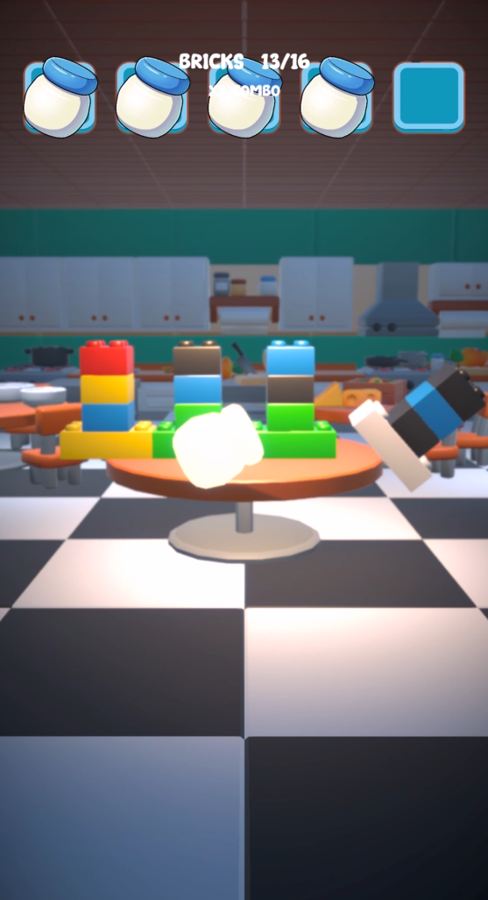
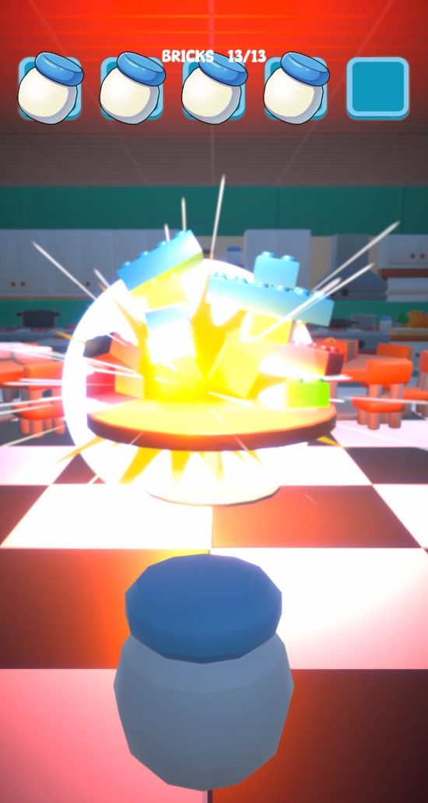
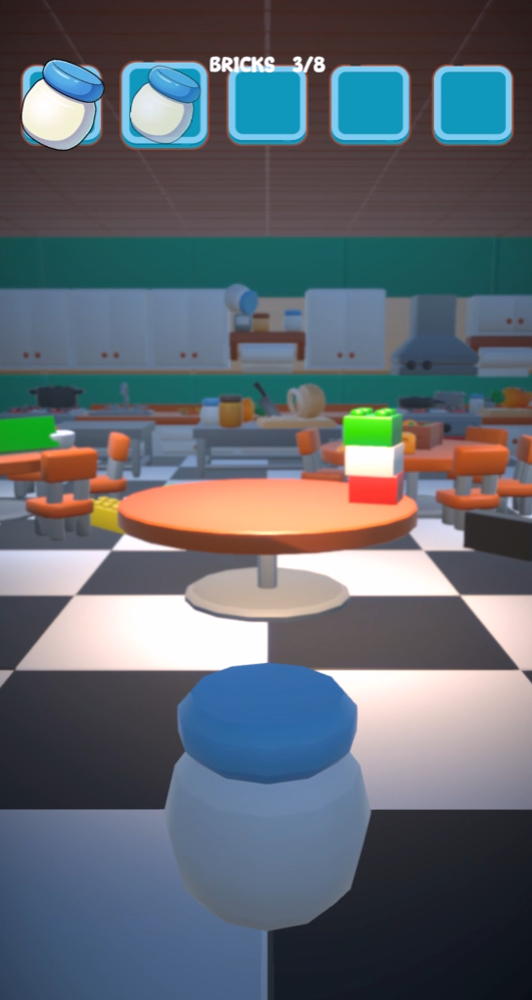
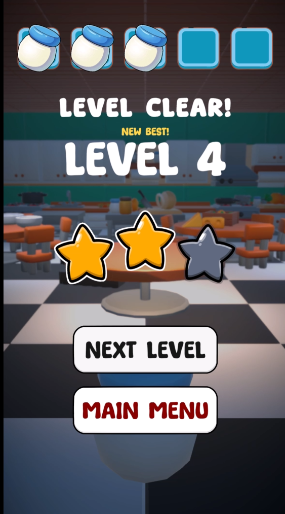

Counter
Smash
A small mobile physics game built to study game feel. The central question: how can a simple hold-and-release shot create readable timing, tension and a satisfying hit?

The feel of the shot
Hold the screen to charge, then release to fire. The meter loops continuously: it rises toward full, then falls back to zero. A regular release fires a normal shot; releasing in the narrow upper band triggers an explosive shot.
The meter’s fill curve is deliberately nonlinear. Its timing and the perfect-shot band were tuned to make the charge legible and the release feel earned, rather than behaving like a plain linear progress bar. The explosive window sits around the final few percent (98% by default in the prototype): wait for it and risk missing as the meter wraps around.
Layered feedback
The timing mechanic only works if its feedback is immediate and clear. Each successful hit combines audiovisual and physical cues to give the action weight and help the player read what happened.
- Audio pitch and volume variation, plus a distinct cue for the perfect shot.
- Camera shake and brief hit stop to emphasize impact.
- Screen flash, particles and impact audio layered with brick destruction.
- A compact round structure that makes it easy to repeat and tune the interaction.
Prototype gallery
Interface, the charged explosive hit, target state and level completion.



